Eadgar's Ruse
Description: Sanfew requires a rare herb for the next part of the purifying ritual. Travel back to the Troll Stronghold to find this herb that the trolls use as an ingredient for their favourite dish.Difficulty: Easy
Length: Medium
Required Quests:
- Druidic Ritual
- Troll Stronghold
Items & Skills Needed:
- 31 Herblore
Recommended:
Reward: 11k Herblore Experience, ability to Teleport to Trollheim (Lvl 61 to use and requires 2 Law and 2 Fire Runes), and 1 Quest Point.
Instructions:
Go Speak to Sanfew, He will tell you about a herb called goutweed that is needed for the next part of the ritual, unfortunately he doesn't know exactly where it is but he knows its near the trolls somewhere, he tells you that Mad Eadgar might know more and to go see him.
Mad Edgar lives in a cave near the dungeons you rescued him from in the Troll Stronghold quest, near the top of the giant mountain spiral. See red circle on image below. To get there, make your way to Tenzing's hut, then follow the path through the arena and past Dad, until you get to the stronghold in the picture below. You can just click on the spiral to run through the maze and get to the top. Beware of the Troll Throwers when running past them, turning on Protect from Missiles is helpful.
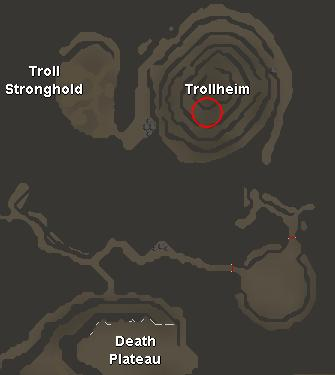
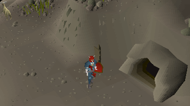
Go Speak to Edgar and he will tell you to speak to a troll cook (Burntmeat) as he'll know where it is.
Go Speak to Burntmeat inside the Troll Stronghold (go in the main entrance, then head south and go down the stairs), he'll say he'll only tell you in exchange for some tasty human meat as he's getting bored of goat.
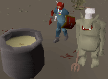
Go back and speak To Eadgar again, he'll tell you he has a cunning plan but you'll need a parrot first.
He tells you where else would you get a parrot except for the zoo?
He tells you where else would you get a parrot except for the zoo?
Head To Ardrougne Zoo and talk to Parroty Pete, find out about the mix up with the vodka and that his favorite food is Pinapple Chunks.
(If you don't have Pineapple Chunks or Vodka, head to the Grand Tree in Tree Gnome Stronghold. Speak to the shop owner Heckel Funch on the second floor to the east of the pub/bar and buy some.)
(If you don't have Pineapple Chunks or Vodka, head to the Grand Tree in Tree Gnome Stronghold. Speak to the shop owner Heckel Funch on the second floor to the east of the pub/bar and buy some.)
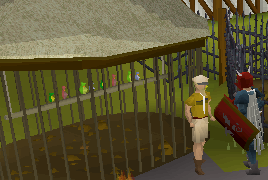
Dice the pinapple into chunks and use the vodka on them to make alcho-chunks. Then feed these to the parrot by using the alcho-chunks on the hatch on the side of the cage, if you don't use the vodka on the chunks then the parrot will be too quick for you.
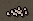
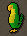
Take the Parrot to Eadgar, and he'll tell you he's going to make a scarecrow. For this you'll need something that talk's like a human, taste's like a human, smell's like a human and also that look's like a human. To make this you'll need: 10 grain, 1 log to make a body so it looks human, 5 raw chickens so it taste's human (coz everything tastes like chicken), some dirty robes so it smells like a human, and you'll need to teach the parrot words the trolls would expect to here from a human.
Follow the map below to get to the prison where you rescued Eadgar from in the Troll Stronghold quest. You want to get to F3 where the cells are. Hide the parrot in the torture racks just north of the prison cells. This will teach the parrot to talk. Leave it there and continue on with your quest.
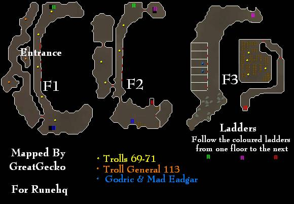
Go back to Mad Eadgar and speak with him. You can hand in the grain, log, and raw chickens to him now if you have them with you.
Head to Taverley and speak to the Druid washing the robes, ask him for some dirty one's and when he says he won't give them to you, tell him Sanfew would be ashamed or threaten to cut down some trees.
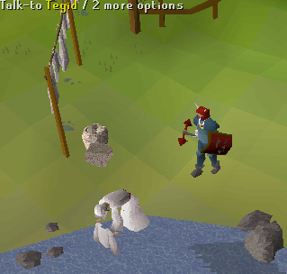
Now take the Dirty robes and the other items back to Eadgar.
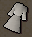
He'll Explain that it's better if we make a potion so we know the troll is telling the truth as the troll might lie to us. For this you'll need a Ranarr Weed, a Water Filled Vial, and some Troll Thistle (this grows by the back of Eadgar's cave - east and one level below cave entrance).
Go to the top of the mountain just outside Eadgar's house and pick the thistle, then burn it on a fire (There are some near the entance to the Stronghold in the troll camp) and grind it down, then put it in a vial with the Ranarr Weed to get a Troll Potion.
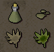
Go give the Potion to Eadgar and he'll tell you to go get the parrot. Head back to the torture rack, and after listening to the parrot about his spleen head back to Eadgar.
Eadgar will use the Parrot on the scarecrow and give you a fake human. Now take this to Burntmeat.
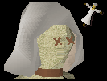
Burntmeat will take the fake human and give you the first thing he ever cooked...burntmeat, now ask him about the Goutweed, and he explains that its in a fake drawer in the bottom of the kitchen drawers. Search the closest set of drawers and find a key.
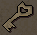
Head down the stairs to the storeroom. Once inside the store room, you need to get from one side to the other without getting caught by the trolls, this is easier then it seems as the trolls will only throw you out of the store room if they hit you, so don't worry about them seeing you.
Once you are over the other side of the storeroom, grab the Goutweed and a troll will throw you out of the store room.
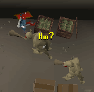
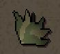
Take the Goutweed back to Sanfew to collect your reward.
Congratulations, Quest Complete!
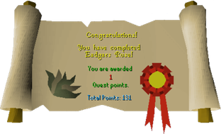
This quest guide was written by Im4eversmart and Leader of Darkness (Davidsp), and map by engekomkomme. Thanks to DRAVAN, DownStrike, Nitr021, seanj50 and Infy102 for corrections.
This quest guide was entered into the RuneHQ.com database on Wed, Oct 06, 2004, at 09:33:10 PM by Monkeymatt and was last updated on Tue, Nov 15, 2005, at 09:05:35 PM by DRAVAN.